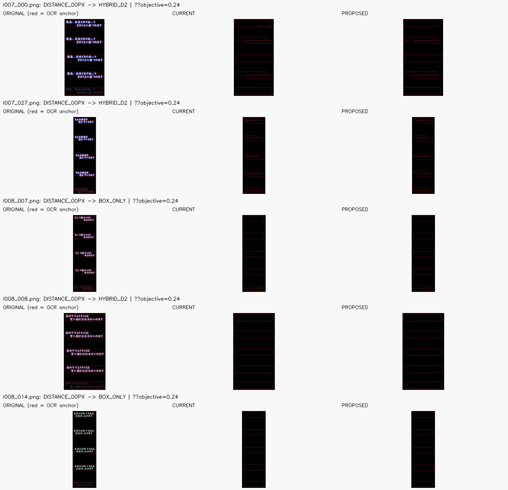
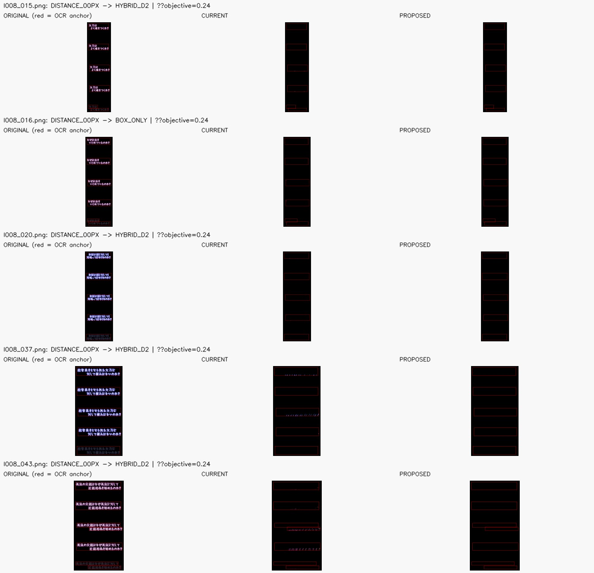
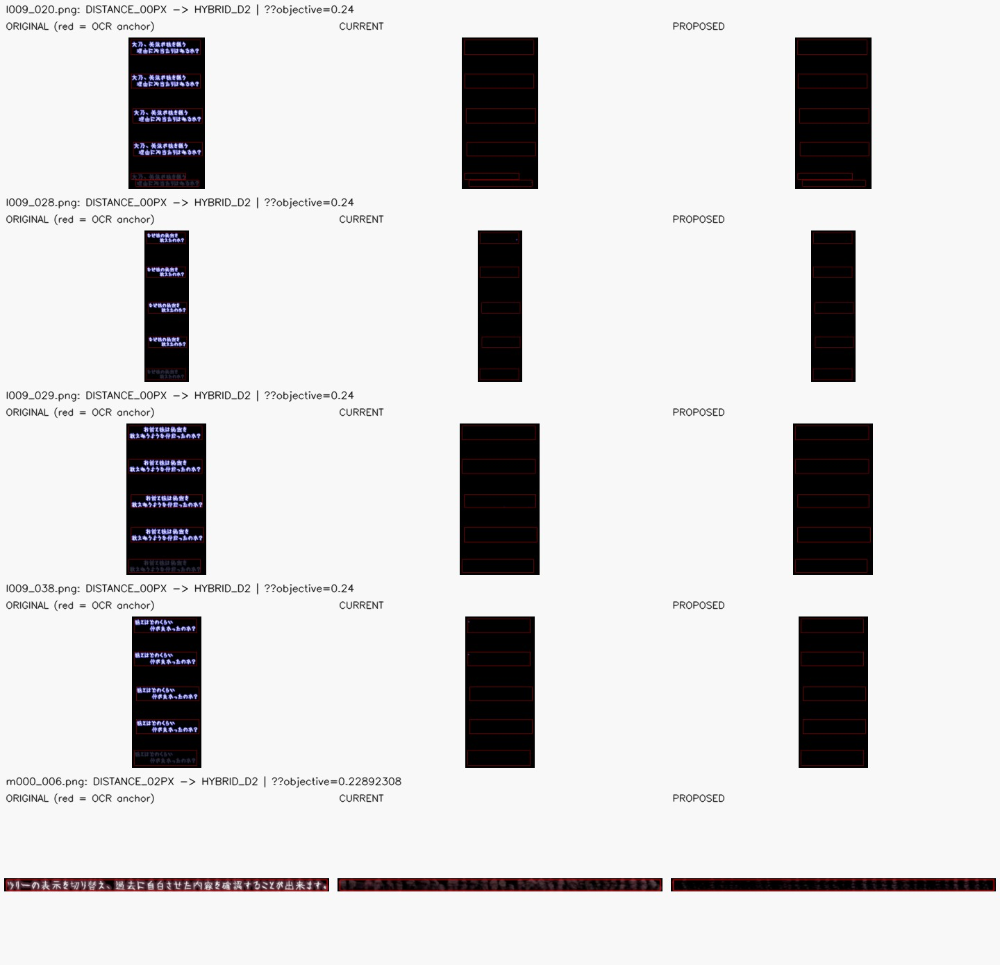
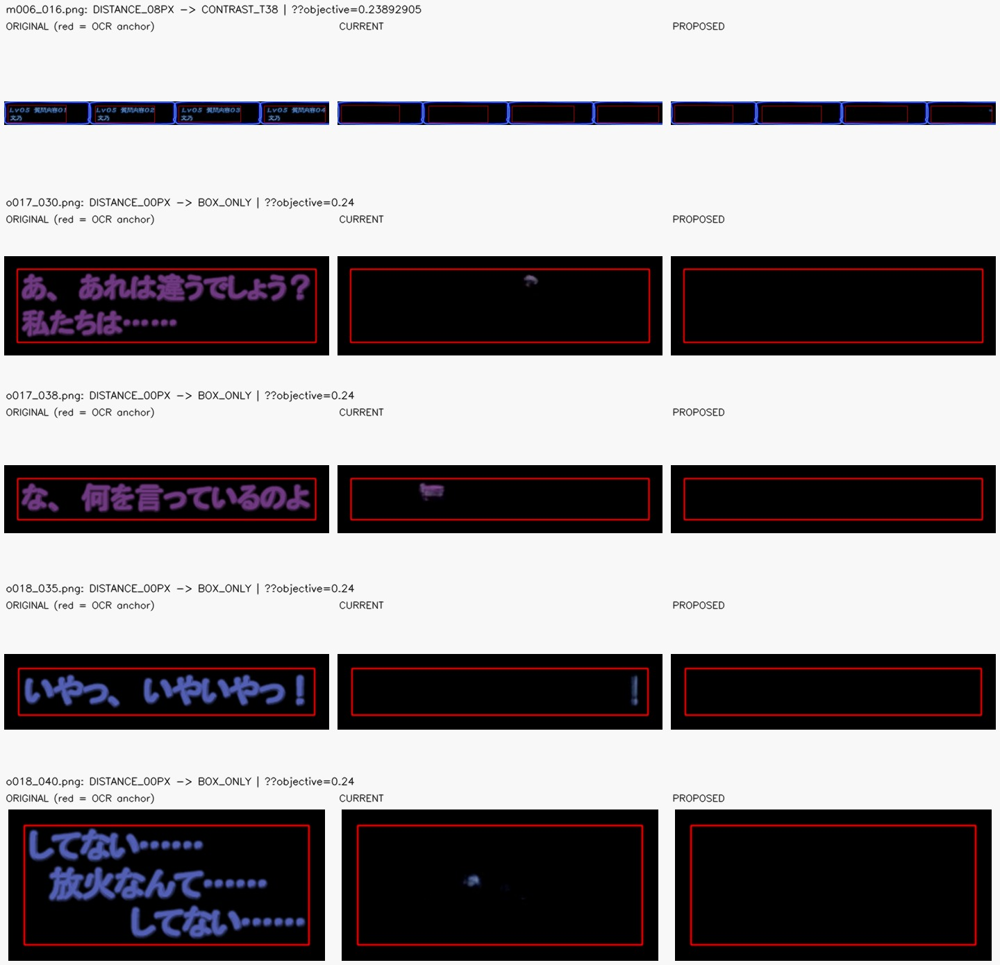
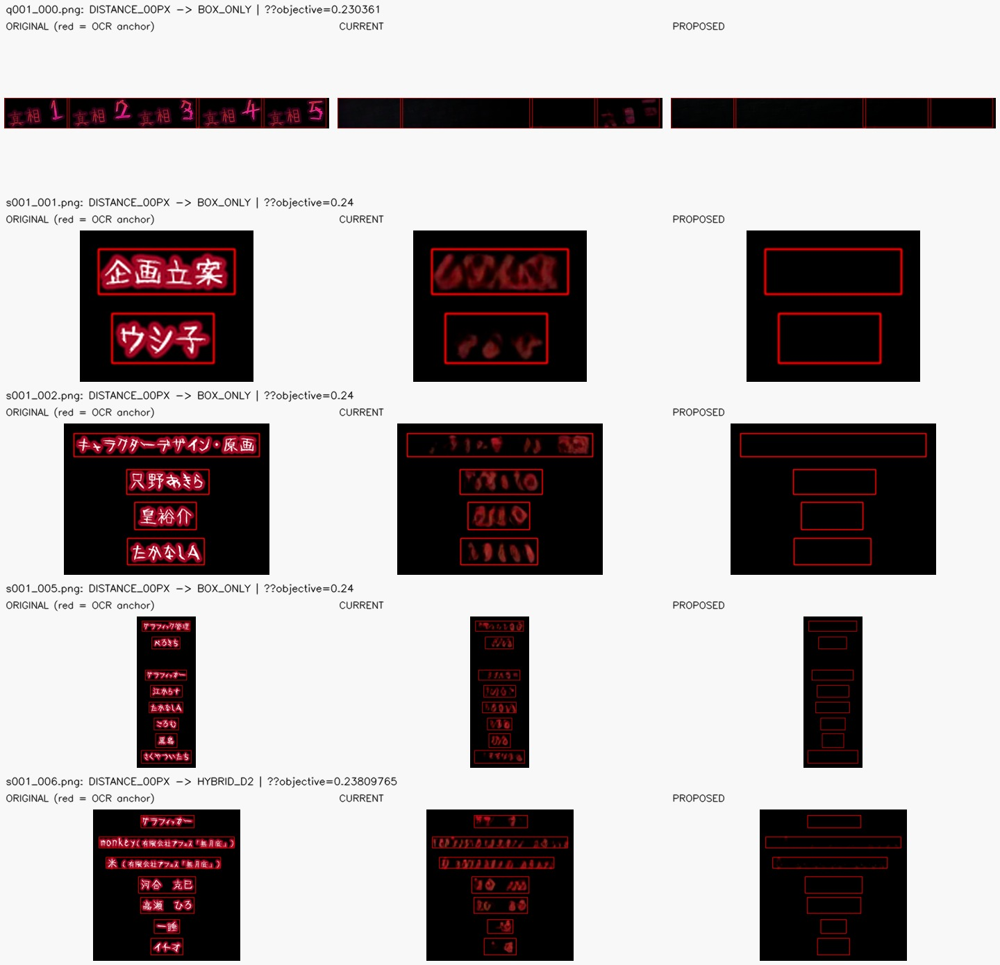
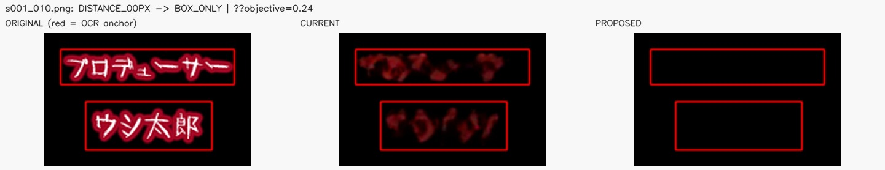

Fälle: 26 · Kontaktbögen: 6
Je Fall: ORIGINAL (rote Rechtecke = OCR-Anker), CURRENT (bisherige Auswahl), PROPOSED (vorgeschlagene Auswahl). Die Kontaktbögen sind nur für Review; Produktionsdateien und Kandidatenbilder werden nicht verändert.
Quell-CSV: /home/secret/Downloads/Cleanup/yolo_mask_winners/full_recheck_after_detection_20261024_030641/debug_candidates/counterfactual_color_rule_full_population_20261024_214800/numeric_distance_winner_audit_20261024_224539/numeric_distance_outside_anchor_followup_20261024_232802/numeric_distance_qualifying_changes_for_outside_anchor.csv
Enthaltene Bilder: l007_000.png · l007_027.png · l008_007.png · l008_008.png · l008_014.png · l008_015.png · l008_016.png · l008_020.png · l008_037.png · l008_043.png · l009_020.png · l009_028.png · l009_029.png · l009_038.png · m000_006.png · m006_016.png · o017_030.png · o017_038.png · o018_035.png · o018_040.png · q001_000.png · s001_001.png · s001_002.png · s001_005.png · s001_006.png · s001_010.png





